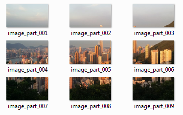

The Main Focus of this Lab
- In this lab, you largely focus on:
- Using functions
- Creating and using new turtle objects
- Repeating things using loops and nested loops
- Using events
ondrag()andonkeypress() - Logical thinking, for checking positions
What You Will Learn in This Lab
- In this lab, you will gain experience in the following areas:
Topic Computer Science/ Programming Concept Making decisions Writing If statements ( if ... elif ... else ...)Repeating things using loops Using for loops ( for ...)Building nested loops, i.e. a loop inside another loop Using a list with a for loop Random number generation Getting random values using random.randint()Data conversion Converting any value to an integer with int()Using the turtle graphics module Working with the turtle window size Creating new turtles Changing the shape of a turtle to an image Using events ondrag()andonkeypress()Lists, Tuples and Strings Using a list to store turtles Building strings Functions Defining your own function for the turtle drag event Logical thinking Checking positions
Overview
- In this lab you will create a Jigsaw game using Python
- Like a real jigsaw, the objective of the game is to drag all the pieces of the jigsaw into the correct place
- Here is a video showing the game being played (there is no sound for the video):
Getting Started
- A Python file (jigsaw.py) is given to you as a starting point here (right click on the link, select 'Save Target As' or something similar)
- Please download the file into your local hard disk
- After you finish your work please remember to store it somewhere safe (e.g. your USB disk)
Lab Content
Video Lab menu
- Here are the steps for building this project:
- Create the Images for the Jigsaw Pieces
- Write the Code to Move the Pieces Randomly
- 2.1. Set up the nested loops
- 2.2. Contents of the loops
- 2.2.1. Generate a random position
- 2.2.2. Create a turtle at this position
- 2.2.3. Prepare the image file name used by this jigsaw piece
- 2.2.4. Load the image file
- 2.2.5. Set up an
ondragevent - 2.2.6. Maintain a list of all turtles
- Check if the Jigsaw is Correct
Illustration
Video for Illustration and Section 1
- Note: The second link for image cropping is not working, and it is removed from the website.
- Here is an overview of the system structure of the lab:
{kind=link}
1. Create The Images for the Jigsaw Pieces
- Each jigsaw piece uses an image file
- We allow the following 4 choices of jigsaw pieces:
- If you want to have 9 jigsaw pieces (for a 3×3 structure), then you need to prepare 9 images for the program
- If you want to have 16 jigsaw pieces (for a 4×4 structure), then you need to prepare 16 images for the program
- If you want to have 25 jigsaw pieces (for a 5×5 structure), then you need to prepare 25 images for the program
- If you want to have 36 jigsaw pieces (for a 6×6 structure), then you need to prepare 36 images for the program
1.1. Find a suitable image
- You first need to find an appropriate image
- It must be a GIF file (the file extension is ".gif")
- If you want to search for one on Google, you may specify
filetype:gifto filter out incompatible files - You can check the file is a GIF file by using the following steps
- For Windows Computer
- Click Start, click Windows System, and then File Explorer
- Click the View tab in File Explorer
- Click the box next to "File name extensions" to see file extensions
- For Mac Computer
- In the Finder on your Mac, choose Finder > Preferences, then click Advanced
- Select "Show all filename extensions"
- For Python file, you should see ".py" at the end of the filename
- For GIF file, you should see ".gif" at the end of the filename
- It should have an appropriate size so that it fits in the screen
- Around 600 pixels wide
- Here is an image that you can use:
(Right click and save the file to somewhere you can find it later) - You can use any photo you like, as long as it is in GIF format
1.2. Split the image into the jigsaw pieces
- You need to extract parts of the image so that you can have a set of jigsaw pieces
- Every jigsaw piece will show an image file (part of the original image)
- You can either use software on your computer to split the image, or use an online service
- Here is a online image splitter that may be helpful:
- After you input the appropriate parameters in the image splitting system, you can obtain a set of, for example, 9 images in a zip file
- If you do not understand certain things in the splitting system, you can leave it unchanged
- It is however important to set the "Output images format" to be "Without changes, same as original image"
- After downloading the zip file, please extract the file into the same folder as your Python file (
jigsaw.py) - After extracting, you have a set of images, but you still have to rename them in a particular way so they can be loaded by Python code easily
- They may have names like this before renaming:
 - You have to rename them so that the file name includes the row and column information, like this:
- You must use hyphens (-) to separate the word "image", the row number, and the column number so that the checking code will work properly
- If you want to, you can rename your original image into solution.gif. You don't need to submit solution.gif
- Python code will load the images, put them inside turtles, and use the turtles for the jigsaw pieces
- Please use gif as the photo format, as Python cannot import photos other than gif files for the Turtle's new shape
2. Write the Code to Move the Pieces Randomly
Video for Section 2
- Now you can edit the given file
jigsaw.pyin IDLE - Most of the work will be done in the
createJigsaw()function
2.1. Set up the nested loops
- First, you need to set up the number of rows and columns, into two variables
totalRowsandtotalColumns - Here is the nested loop structure:
For loop going through the rows: For loop going through the columns: Generate a random position for the new turtle Create a new turtle and move it to this position Prepare the name of the image file that goes with this turtle Load the image file into the turtle - You can prepare the framework of the outside
forloop first:
for row in range(totalRows): # Go through the rows one by one We will prepare the loop contents later - Now, you can prepare the inner loop for the columns by using an appropriate variable name
- Don't forget the necessary indentation to make the nested loop work!
2.2. Contents of the loops
2.2.1. Generate a random position
- The jigsaw pieces will be put at random positions on the screen when the game starts
- The size of the window created by the turtle system depends upon the width and height of the computer display you are using
- Although you can't be sure what the width and height of the turtle window will be, after it is created you can ask the turtle system what they are
- You can obtain the turtle screen dimensions using the commands
turtle.window_width()andturtle.window_height() - You can then generate a random
xandyposition:
x = random.randint( -int(turtle.window_width()/2) , int(turtle.window_width()/2) ) y = random.randint( -int(turtle.window_height()/2), int(turtle.window_height()/2) )
int()is necessary to avoid errors inrandom.randint()- To check if these variables are being prepared properly, we can use the
printas a debugging tool, for example:
print( "x = ", x )
- You can now try this by running the code
- After you confirm that the variables
row,column,x, andyare working properly, you could remove theprintcommand - Or you may convert the command into a comment by adding the symbol # in front, so it becomes a comment and is ignored when the program is run
2.2.2. Create a turtle at this position
- You can create a new turtle using
turtle.Turtle(), like this:
newTurtle = turtle.Turtle()
- After you create the turtle, you need to tell
newTurtlehow to behave: - In this project, it's useful to tell the new turtle not to draw when moving
- Then, you should move the new turtle to the random position we prepared in the last section
- You should also ensure the turtle moves as fast as possible instead of using the default speed
- While you are developing your program, you could run the code after each step to see their individual effect
2.2.3. Prepare the image file name used by this jigsaw piece
- Then, you can set up the image file name to be loaded, with the
rowandcolumnvariables, according to your actual file names:
- The file name can be built like this:
theFilename = front part of the file name + row number + "-" + column number + ".gif"
- In our example, the front part is
"image-" - Check that you named your files properly!
- If you did not change the file type, the image should be a gif file (a common image file format)
- The row number is stored in the variable
row
and column number is stored in the variablecolumn - We build our file name using 5 pieces of text here, connected by the
+operator - The
rowandcolumnare the variables we had earlier, for example2and3respectively - In our example, the variable
theFilenamewill take the valueimage-2-3.gif - You need to ensure the numbers are converted to string for building the string! (i.e.,
str()should be used appropriately) - Remember you can always use print to check what is in a variable e.g.
print( theFilename ) # This shows the generated image filename
2.2.4. Load the image file
- You can then load the image file into the turtle:
- First,
.addshape()command adds an image file into the turtle system for later use
turtle.addshape(theFilename)
- Second, the
.shape()command applies this image file into the mentioned turtle
newTurtle.shape(theFilename)
- First,
2.2.5. Set up an ondrag event
- Finally, you need to allow the jigsaw piece (
newTurtle) to be controlled when the user drags the mouse - This can be done by linking its
.goto()command with itsondragevent, like this:
newTurtle.ondrag(newTurtle.goto)
- This means 'when the turtle called newTurtle is dragged, newTurtle (i.e. the same turtle) will be moved to the position where it is being dragged'
2.2.6. Maintain a list of all turtles
- When we make lots of turtles we need to keep track of them, so they can be easily controlled later
- To do that we put all the turtles in a list
- In this project the list is called
allTurtles - So after the new turtle is created it is then appended at the end of the list
allTurtles, like this:
allTurtles.append(newTurtle)
2.3. Try out your work
- You can restart the program at any time to try your code
- When the final version of the program is run, the jigsaw pieces appear in a random position
- These jigsaw pieces can be dragged around using the mouse to different positions on screen
- If you see error messages regarding loading files, check if the file names are prepared properly!
3. Check if the Jigsaw is Correct
Video for Section 3
3.1. Overview of checking the jigsaw
- To allow the player to check if the jigsaw pieces are arranged correctly, a function
checkJigsaw()is needed - You can press "c" (c for check) on the keyboard, the check will be performed
- If the jigsaw is roughly correct, a message of congratulations will be shown
- Otherwise, a message will be shown mentioning that the jigsaw puzzle is wrong
- Although most of the code in this function is already given to you, you should try to read and understand it
- The basic idea of the function works like this:
First assume jigsaw is correct For loop through every turtle Obtain positions of the turtle Obtain row/column data from file name associated with turtle For loop through every turtle for comparison Obtain position of the comparing turtle Obtain row/column data from file name associated with the comparing turtle If the position of the current turtle violates the row/column data when comparing with another turtle Jigsaw is wrong Show an appropriate message - Here you can see how the jigsaw pieces could be aligned in a 2×2 jigsaw:
- We need to check, for example, that the jigsaw piece for row 0 column 1 should NOT be below the piece for row 1 column 1, nor should it be on the left of the piece for row 0 column 0:
- Since only the position of the turtles (at the centre) is compared, this allows the jigsaw pieces to be slightly away from its expected position
3.2. Check position violations
- There are four possible cases when the jigsaw position is wrong:
- The piece has a smaller column value but is on the right
- The piece has a larger column value but is on the left
- The piece has a smaller row value but is on the bottom
- The piece has a larger row value but is on the top
- Your code needs to check if any of these cases are true, which will mean the jigsaw is wrong
- Only the first case is given to you in the code, like this:
# The piece has a smaller column value but is on the right if thisCol < compareCol and thisX >= compareX: checkResult = False break - You need to complete the other three cases
3.3. Improve the game over messages
- In the starting code, only a
print()statement is used for the game over messages - You need to improve the game by putting the game over messages at an appropriate position on the turtle screen
turtle.write()should be used to replace theprint()statement- You should use a better font and colour as well
- To avoid overlapping text messages, you can use
turtle.clear()to clear everything the turtle has previously drawn/written
Submission
- You have to submit this lab work (as one zip file "lab4.zip")
- Enter your name and student ID number in the Python code, so it can be easily seen
- You need to submit within the 9 days following the taught day of your lab, before midnight
- The exact times and dates are shown at the end of the marking scheme page here
- You must look at the marking scheme to make sure all the parts are done properly
- Remember, you must submit lab4.zip containing:
- the Python code file
- the jigsaw image pieces (e.g. 9 images if a 3×3 jigsaw has been created)
- Here are the guidelines to create the submission file - You MUST follow these guidelines to prepare your submission
- Submit your work early, days before the deadline!
- If you find that you have made a mistake after you have submitted your work, you can submit again, as many times as you like, BEFORE the deadline.
- We will mark the most recent submission which is before the deadline.
- You won't be able to submit your work after the deadline!
- Check that you have submitted the correct version of your own file
- It would probably be helpful if you keep a copy for yourself, e.g. for your revision later
- For example, you can put your file in your USB disk (if you have one) or email a copy to yourself